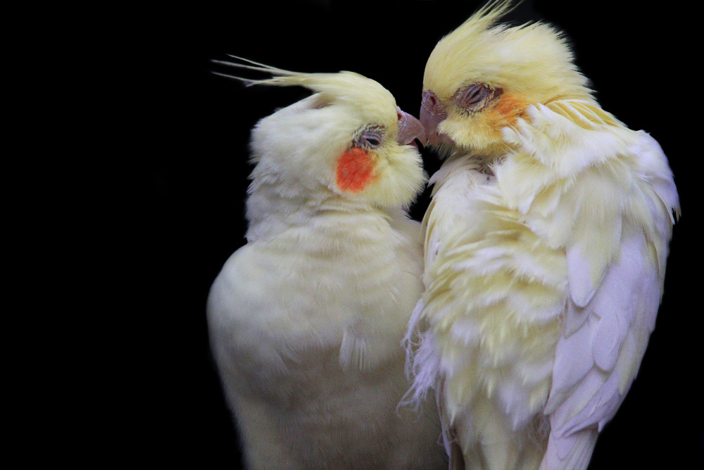
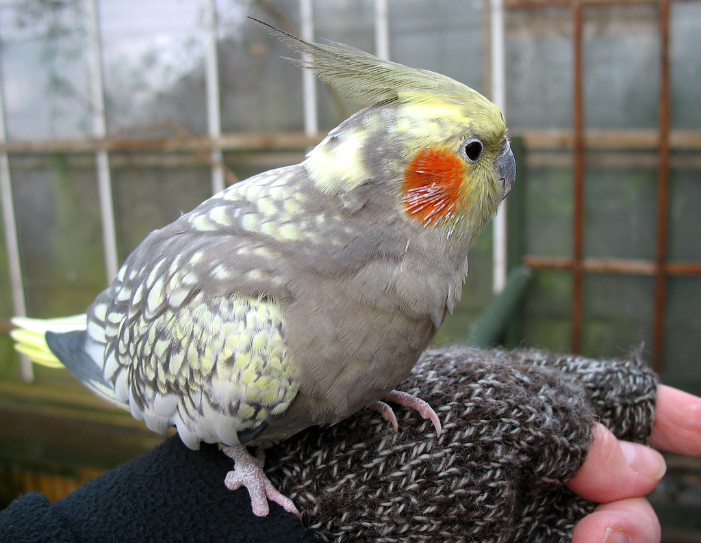
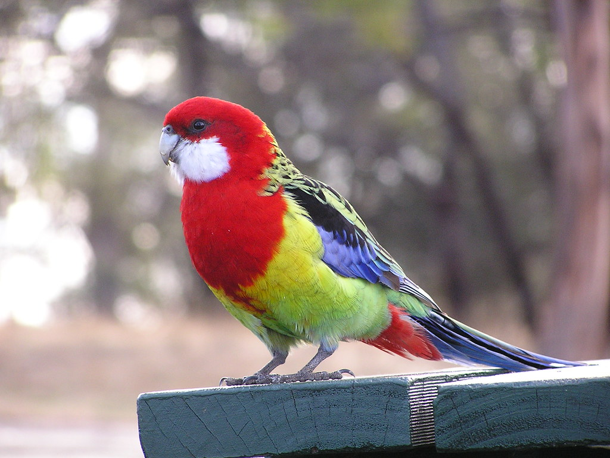
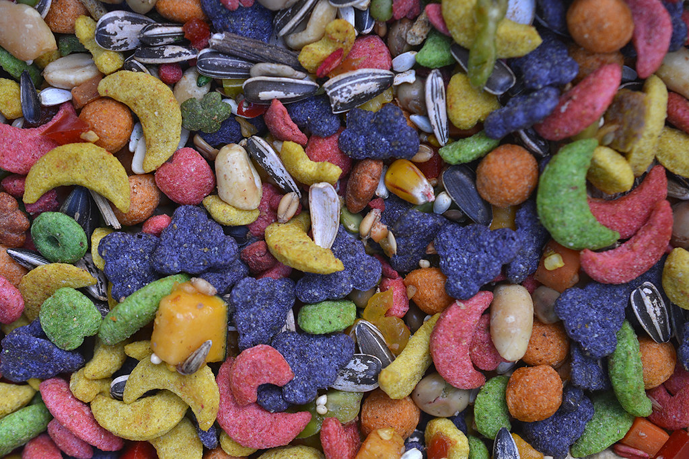
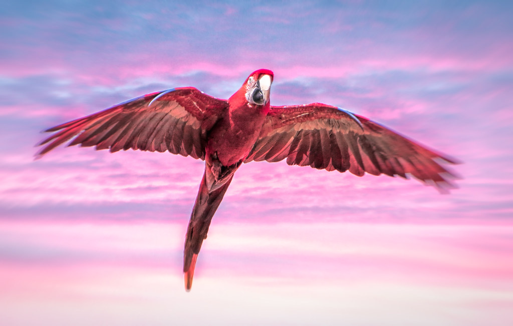

محتوى عربي أصيل
مصطلحات واضحة وشرح مبسّط يناسب المبتدئ والخبير، بلا ترجمة حرفية ولا غموض.
من أول نظرة إلى روتين يومي هادئ؛ يجمع لك «ريش» ما تحتاجه لتربية طائر سعيد وصحي: أنواع الطيور، التغذية، النظافة، الصحة، والتربية خطوة بخطوة.
اكتشف المزيد

جمعنا خبرة التربية اليومية في محتوى عربي مرتب، بعيد عن التعقيد والحشو. تقرأ، تفهم، وتطبّق اليوم.
مصطلحات واضحة وشرح مبسّط يناسب المبتدئ والخبير، بلا ترجمة حرفية ولا غموض.
خطوات عملية تنفذها اليوم: من تجهيز القفص إلى قراءة لغة جسد طائرك دون تخمين.
تغذية، نظافة، صحة، وتربية وتكاثر؛ كلها في مكان واحد وبتسلسل منطقي يسهل تذكره.
لا نعلّمك تملّك طائر، بل فهمه واحترام احتياجه للحركة والرفقة والهدوء.
لكل طائر مزاج وصوت واحتياج مختلف. اختر ما يناسب أسلوب حياتك، لا ما يعجبك في الصورة فقط.
 ببغاوات
ببغاوات
أذكياء، اجتماعيون، ويحتاجون تحفيزًا يوميًا أكثر مما يتوقع كثيرون.
اكتشف النوع طيور صغيرة
طيور صغيرة
رفقة قوية... لكنها ليست زينة فقط.
اكتشف النوع
طيور صغيرةصوت هادئ وقلب اجتماعي يحب الرفقة.
اكتشف النوع
ببغاواتألوان مدهشة وروح مستقلة تحب المراقبة.
اكتشف النوع
طيور مغردة
تغريد يملأ الصباح، وعناية بسيطة ومستقلة.
اكتشف النوعالعناية بالطيور ليست مهامًا معقدة؛ إنها عادات صغيرة تتكرر كل يوم. أتقن الأساسيات الأربعة، وستفهم طائرك أكثر.
حبيبات وخضار طازجة وماء نقي، بكميات تناسب نوع طائرك.
أوعية تُغسل يوميًا وقفص يتنفس، بلا روائح ولا بقايا.
ماء فاتر، وعاء ضحل، ووقت صباحي دافئ بلا تيارات هواء.
مساحة للطيران، مجاثم متنوعة، وإضاءة طبيعية هادئة.



ابدأ من الأساسيات، وستجد أن الفرق يظهر في نشاط طائرك، ولون ريشه، وصوته في الصباح.
اقرأ دليل العنايةأربع ملاحظات تختصر كثيرًا من أخطاء البدايات. خذ واحدة وطبّقها اليوم.
 الكوكتيل — رفيق هادئ بحاجة إلى ثبات
الكوكتيل — رفيق هادئ بحاجة إلى ثبات
الماء النقي ليس تفصيلًا صغيرًا؛ غيّره مرتين يوميًا، واغسل الوعاء قبل أن تملأه.